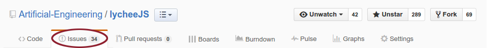

Workflow
Inhalt
- Triangular Workflow
- Work with GitHub
- Organization
Triangular Workflow
Fork Management
- vollständige Kopie eines Repos (upstream)
- Eigene Weiterentwicklungen / Bugfixings
- Taucht als eigenes Repo unter deinem Account auf

Beispiel
$ git clone http://github.com/YOUR-ACCOUNTNAME/lycheeJS
- Geforktes Repo dann als lokale Kopie auf dem Arbeitsrechner clonen
Don't get out of sync
- Das geforkte Repo muss natürlich auch up-to-date sein
- Regelmäßiges pullen des originalen Repos (upstream):
$ git pull https://github.com/Artificial-Engineering/lycheeJS.git
!!! Pushen nicht vergessen !!!
- Die Updates sind bisher nur in deiner lokalen Kopie auf dem Rechner
- Pushen, um die Änderungen auch in deinem Github Fork zu haben
$ git push
Pull Request
- Nach der Arbeit stellt man einen Pull Request an das originale Repo
- Fork Maintainer initiiert Pull Request
- Maintainer des originalen Repos (upstream) entscheidet ob er deine Änderungen annimmt und merged

Triangular Workflow
Working with Github
Issues
- Probleme und Diskussionen zu einem Repo
- Verlinkung von Contributors (@user)
- Verlinkung von Commits (@hash)
- Verlinkung von Issues (#number)
- Votes und Reactions
Find Issues
Assign Issues

Organization
TINF15B3
https://github.com/TINF15B3
- Github Organization können mehrere Repos haben
- wSlides
- Organization - Issues zur Vorlesung
- lectureExercises - Live Coding Beispiele der Vorlesung
- Exercises - Übungen für die Vorlesung
- Boilerplate - Projekt zum forken (später)
Aufgabe 1
- Meldet euch bei Github an
- Geht auf https://github.com/TINF15B3/Organization
- Sucht Issue #1 - Schikane
- Kommentiert (pro Gruppe ein Kommentar) den Issue mit einem lustigem Gif
Aufgabe 2
- Forke in unserer Orga TINF15B3 die AwesomeBoilerplate
- Geht auf https://github.com/TINF15B3/Boilerplate
- Ändere das Projekt nach der Aufgabenbeschreibung (zu finden im GithubRepo https://github.com/TINF15B3/Exercises) ab
- Erstelle für jede Aufgabe einen Issue und weise ihn jemandem zu.
- Erstelle einen Pull Request